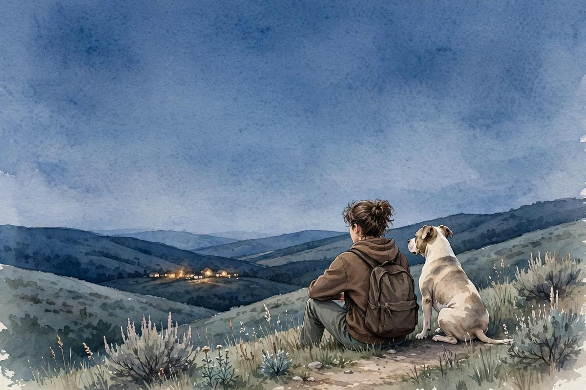

Stories
Free books about being disabled, neurodivergent, misread, exhausted, loyal, angry, funny, and still here.
Read storiesFor ages 13 to 17.

You get to read books here. No explaining required.
Four doors. Pick the one you need.
Free books about being disabled, neurodivergent, misread, exhausted, loyal, angry, funny, and still here.
Read storiesPick a mood and work through it with gentle prompts.
Open journalSeven small tools for hard moments.
Browse toolsHelp shape Off Leash. Share stories, test tools, flag wording, suggest topics.
Get involved